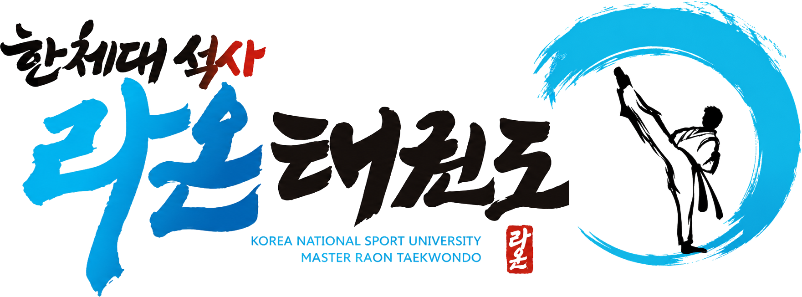

라온태권도 시범단 · 공연 기록
라온의 순간응암2동 함께마당
제8회 응암2동 주민총회
& 응암2동 함께마당
태권도를 넘어,
아이들이 자신을 믿는 법을 배웁니다.
관장님, 사범님, 진심으로 감사합니다.
THE COLLECTION
사진과 영상
함께해 주셔서 감사합니다.

PRIVATE GALLERY
행사에 함께한 가족을 위한 사진·영상 갤러리입니다.
전달받은 비밀번호를 입력해 주세요.
사진과 영상은 허가된 가족 안에서만 공유해 주세요.
라온태권도 시범단 · 공연 기록
제8회 응암2동 주민총회
& 응암2동 함께마당
태권도를 넘어,
아이들이 자신을 믿는 법을 배웁니다.
관장님, 사범님, 진심으로 감사합니다.
THE COLLECTION
함께해 주셔서 감사합니다.